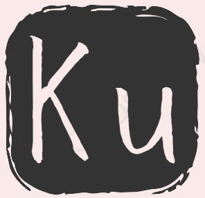

Kuladmir Present
文献分享 Reference
多功能工具 Tools
工具3 Tools 3
工具4 Tools4
关于我 About Me?

你好，我是 Kuladmir 👋
一名热爱网页开发与界面设计的创作者。我喜欢将创意转化为美观、流畅的交互动画， 致力于探索前端技术的无限可能。
🛠️ 技能特长
HTML5 & CSS3 网页布局
JavaScript 交互动画
UI/UX 界面视觉设计
✨ 兴趣爱好
探索前沿网页特效
摄影与视觉艺术
开源项目分享
Bilibili
GitHub
返回主页